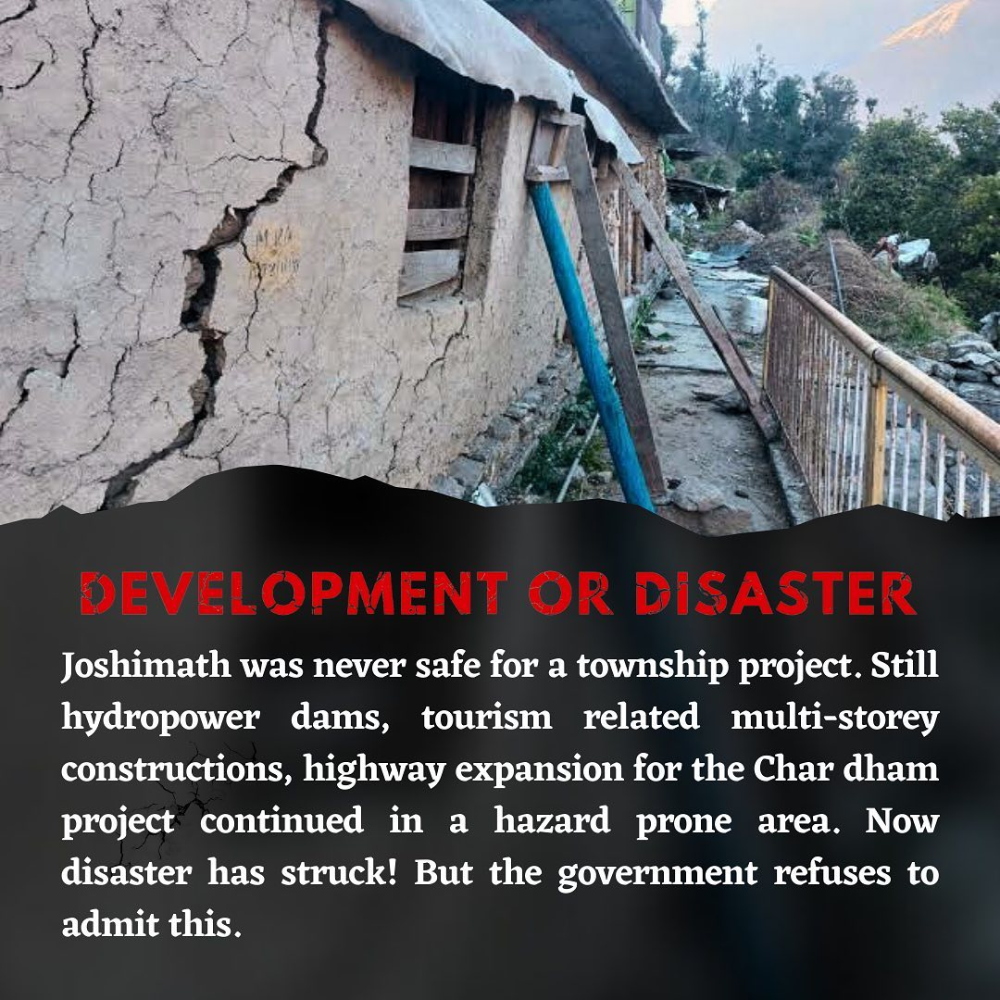
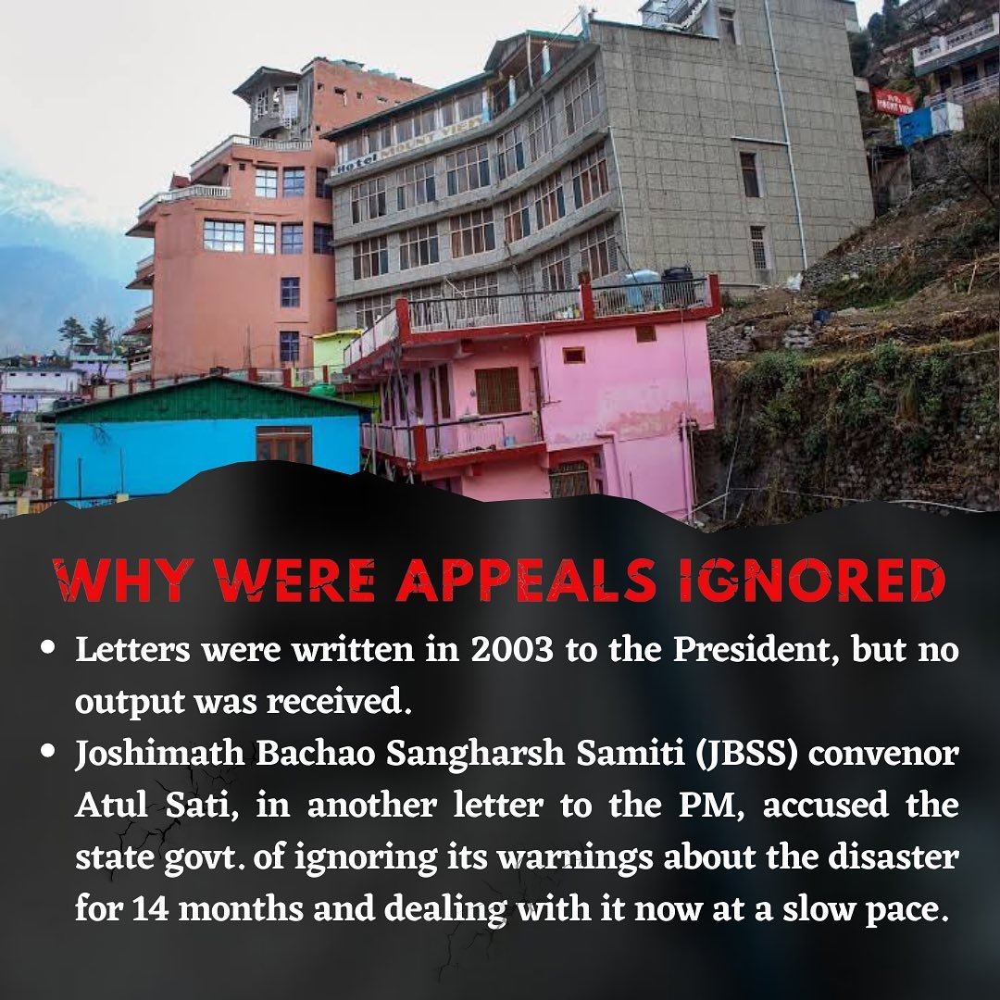
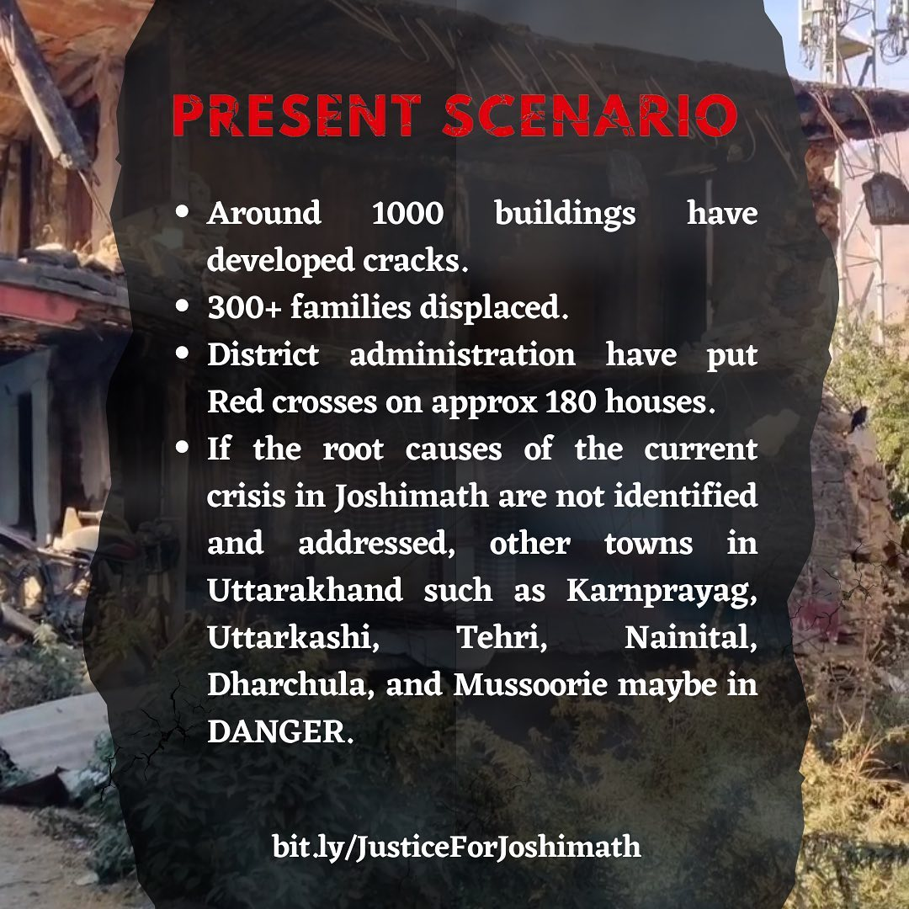
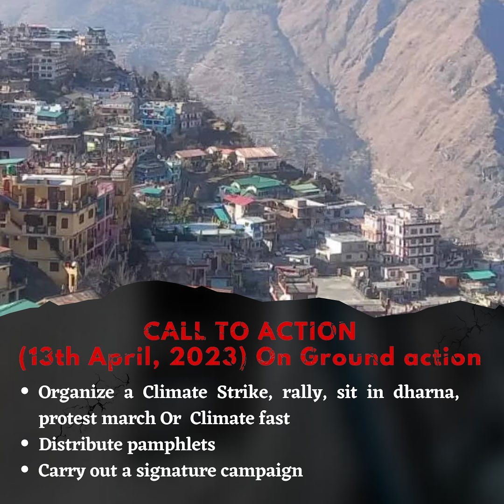

Welcome to the Justice For Joshimath Tweet Box
Tweet AwayDesigned to make it easier for you to stand in solidarity with the people of Joshimath.
We have crowdsourced 7,600 tweets, using a combination of research, news article citations and definitive demands to help amplify #JusticeForJoshimath
We begin at 6 pm on 13th April!
Sources
Join the Group
Use this canva template

Sign the petition

Press note

